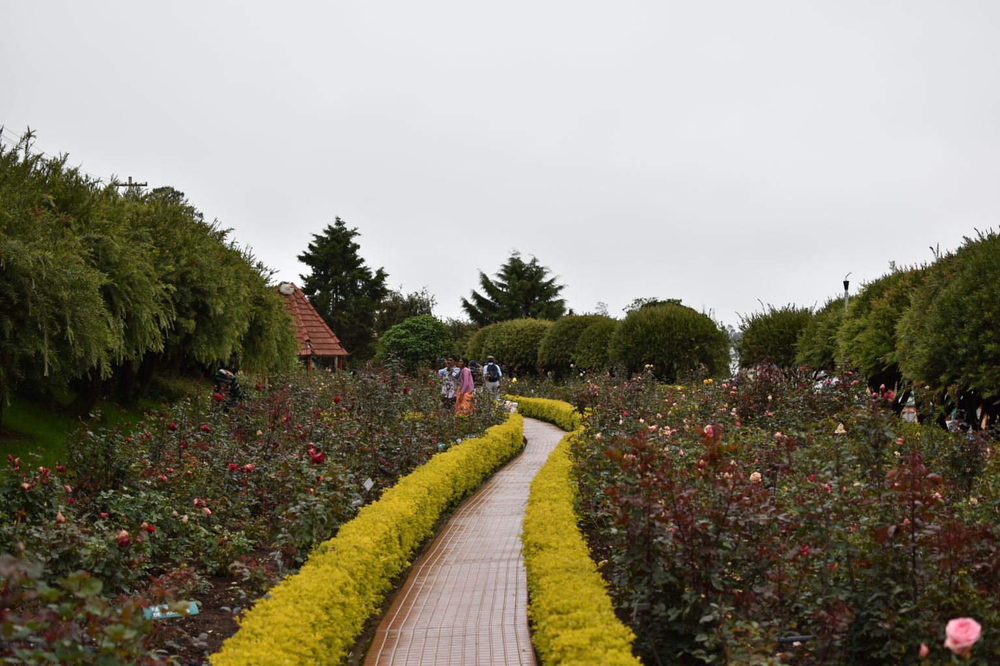

Ooty is a scenic hill town in southern India. It is surrounded by the Nilgiri Hills and is popularly known as the Queen of Hills. But when is the best time to visit Ooty? Climate (if any) is the only serious deterrent which might spoil your travel plans to Ooty. But regarding climate too, Ooty has something different to offer all throughout the year. The summer is perhaps the best time to visit the place, if you are planning to visit all the tourist spots, including some adventurous treks and hand gliding. Be it summer, monsoon or winter, Ooty will enthral you with the natural grandeur of the mountains and the hospitality of its residents. Being a cherished tourist destination for many, Ooty has got excellent connectivity with the cities and towns in the neighbourhood. And hire one of the best car rental companies in Ooty to ensure a comfortable ride with in Ooty.
We pick you up from Railway station (or) Bus stand and drop you at the hotel. After freshup you will visit the following places
1)Coonor
2)Tea Gardens
later we drop you in the hotel and receive you on tomorrow after breakfast
1)Tea Museum
2)Lamb's rock
3)Dolphins Nose
4)Doddabetta Peak
Ooty Rose Garden
a safari on jeep where tigers are reserved
after break fast completion you are picked up by our driver and dropped at the railway station (or) bus stand.....
∇ AC Room at ooty in Beverly villa
∇ Running Hot & Cold Water
∇ 24Hours Room Service
∇ Wi-fi Service
Family rooms also available